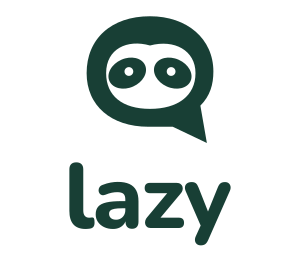
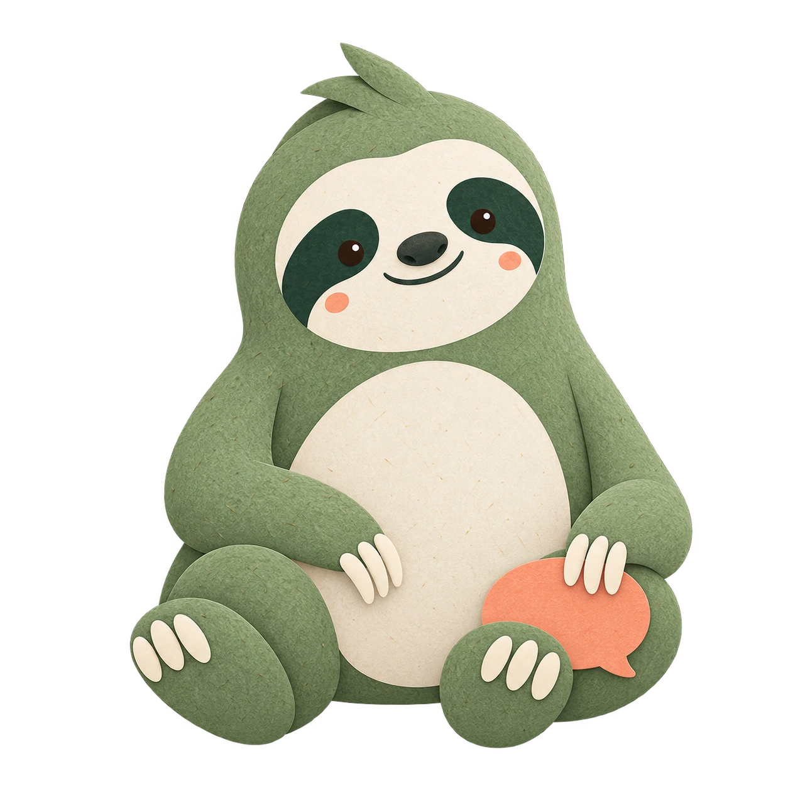
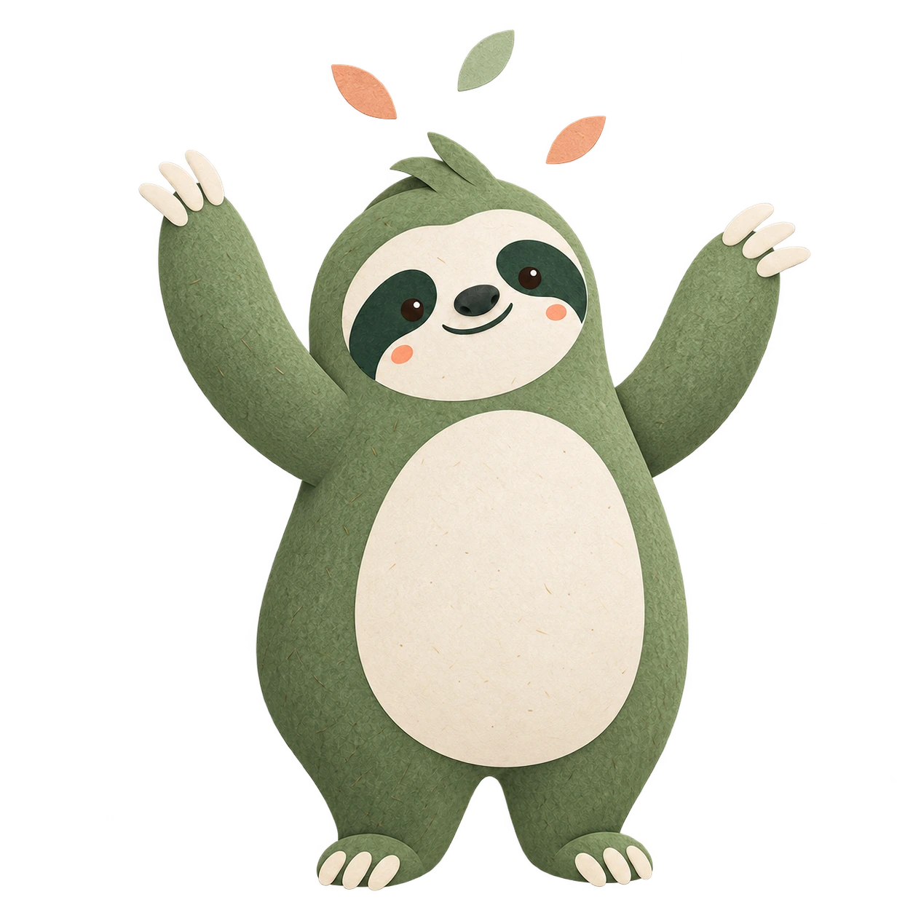
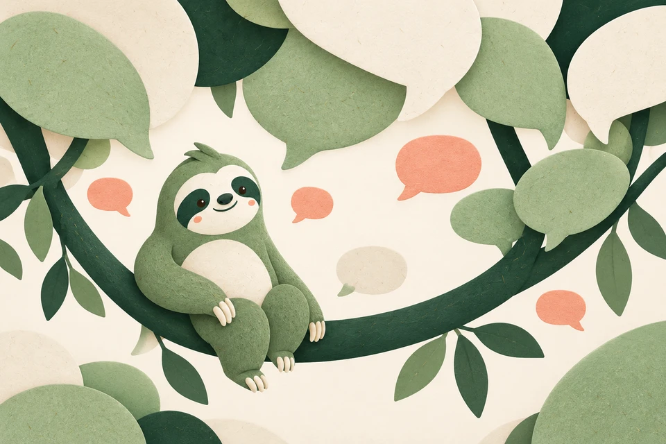
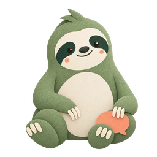
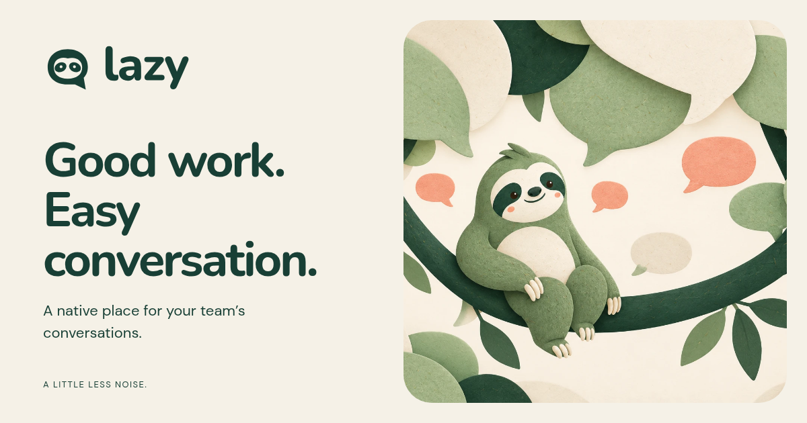
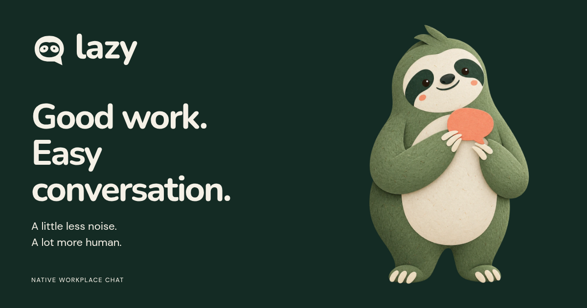

Lazy / Brand library / Version 1.0
Good work.
Easy conversation.
Soft Signal is the selected identity for Lazy. Warm paper, forest greens and a thoughtful sloth make a calmer place for your team.

01 / Foundation
A little less noise.
A lot more human.
The product name is Lazy. Soft Signal names the design direction; Moss is its mascot. Our voice is direct, warm and useful.
Lazy is a native place for channels, messages and the people you work with.
Keep the brand relaxed and attentive. Be specific about product behavior. Let clear writing and generous space do most of the work.
02 / Identity
A familiar face.
A clear conversation.
The approved sloth speech bubble and outlined wordmark form the identity. Use the supplied files to preserve the shapes and spacing.
Primary / Forest on a light surface
Download SVG · PNG


Reverse / Paper on Deep Forest
Download SVG · PNG



Stacked / Covers and square compositions
Download SVG

Symbol / 24 px and up. Reduced-detail favicon / 16–23 px.
Symbol SVG · Favicon ICO

Identity essentials
- Minimum horizontal lockup: 120 CSS px.
- Minimum stacked lockup: 96 CSS px.
- Use Forest on light and Paper on dark backgrounds.
- Preserve the aspect ratio; keep external clear space.
- Use supplied outlines instead of typing a replacement.
- Black, white and Sage variants are included.
03 / Palette
Grounded in green.
Warmed by paper.
Use semantic color tokens in UI. Apricot adds a small human accent; light and dark modes keep the same character.
Select a color to copy its HEX value.
04 / Typography
Rounded headlines.
Readable everything.
Nunito carries the warmth. DM Sans handles paragraphs, navigation, controls and conversations.
Aa
Nunito
Display 750 · Headings 700
abcdefghijklmnopqrstuvwxyz
ABCDEFGHIJKLMNOPQRSTUVWXYZ
0123456789
Aa
DM Sans
Body 400 · Controls 600
abcdefghijklmnopqrstuvwxyz
ABCDEFGHIJKLMNOPQRSTUVWXYZ
0123456789
Self-hosted variable TTF and WOFF2 files include their original licenses. Font stylesheet · Nunito license · DM Sans license
05 / Mascot
Meet Moss.
A gentle companion for welcoming, catching up and small wins. Keep Moss awake, expressive and out of the way of everyday work.






Paper texture, sage body, cream face, dark eye patches, peach cheeks and three cream claws. Use 160–320 px for onboarding; use the simple symbol for small branding. Additional WebP sizes: 256 and 512 px.
06 / Illustration
Conversation grows here.
Large paper forms, speech-bubble leaves and a comfortable curved branch. Text stays live and outside the illustration.

Give the art room.
Use the full scene beside marketing copy. On mobile, stack it below the headline. Keep paper texture in artwork and clean surfaces in the UI.


07 / Interface
Clarity in every state.
Use the theme switch to inspect both palettes. These are reference controls and writing examples for future implementation.
Actions
Use a name your team will recognize.
Enter a workspace name to continue.
Reference controls. No workspace is created.
Status language
Success — Your changes are saved.
Attention — Check this before continuing.
Couldn’t save — Try again in a moment.
Information — Replies will appear in this thread.

08 / Structure
A little breathing room.
A 4 px spacing unit, generous gutters and simple, soft shapes. Let related content sit together.
4 px8 px16 px24 px48 px64 px112 px- Content width: up to 1200 px.
- Mobile gutters: 24 px. Desktop: 48 px.
- Major surfaces: 20 px corners.
- Fields: 8 px. Status surfaces: 12 px.
- Buttons: pill corners, at least 44 px tall.
- Motion: 120 / 160 / 240 ms; respect reduced motion.
10 / Handoff
Everything in its place.
Use SVG for identity marks, WebP for web illustrations and PNG masters for future artwork.
Guidelines
Implementation

<link rel="stylesheet" href="/branding/styles/fonts.css">
<link rel="stylesheet" href="/branding/styles/tokens.css">
<link rel="stylesheet" href="/branding/styles/components.css">
09 / Sharing
Ready for the introduction.
Share cards, a profile avatar and a square image carry the same identity beyond the website.

Light share card / 1200 × 630
Download PNG

Dark share card / 1200 × 630
Download PNG